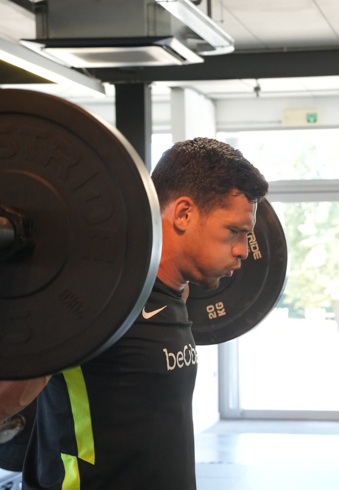

Credo Rehab & Performance: kinesitherapie, revalidatie en performance training in Diepenbeek
 Revalidatie &
Revalidatie &Kinesitherapie Heb je pijn, een blessure opgelopen of een operatie achter de rug? We helpen je graag om beter en sterker als voordien te worden via onze geïndividualiseerde aanpak. Naar revalidatie

Personal Training& Performance Ontwikkel je algemene fitheid of atletisch vermogen met begeleiding die bij jou past. Zet vandaag de stap naar een sterker en fitter lichaam. Naar performance